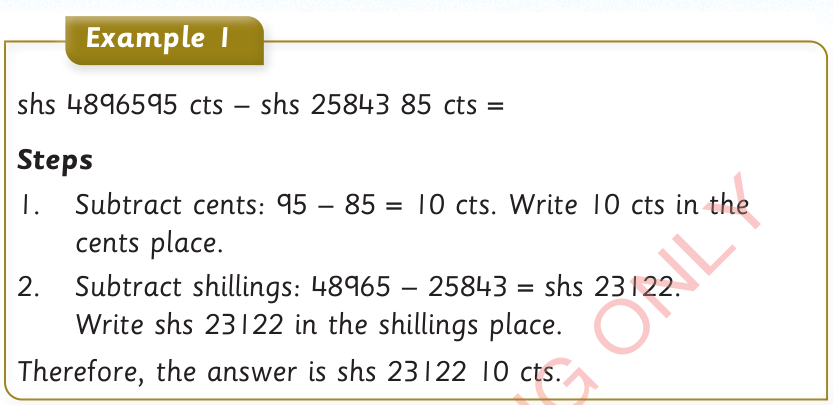
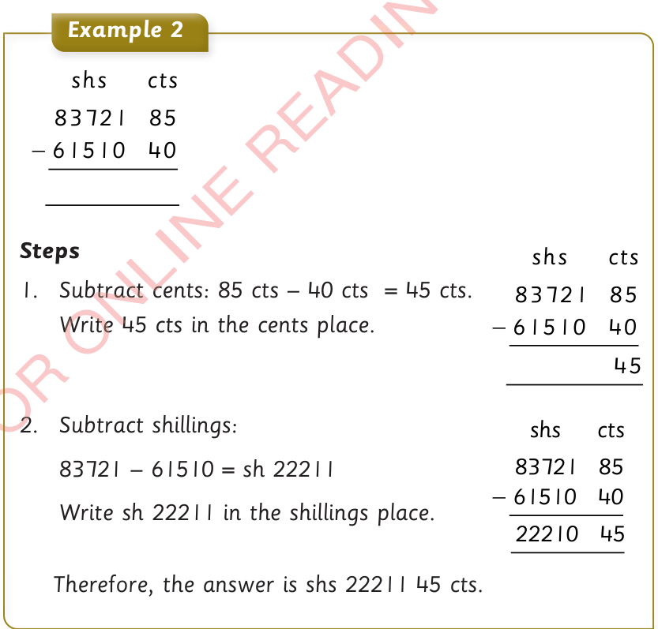

Example 1
shs 48965 95 cts − shs 25843 85 cts =
Steps
1. Subtract cents: 95 – 85 = 10 cts. Write 10 cts in the cents place.
2. Subtract shillings: 48965 – 25843 = shs 23122. Write shs 23122 in the shillings place.
Therefore, the answer is shs 23122 10 cts.

Example 2
shs cts
83721 85
−61510 40
Steps
1. Subtract cents: 85 cts – 40 cts = 45 cts. Write 45 cts in the cents place.
shs cts
83721 85
−61510 40
45
2. Subtract shillings:
83721 – 61510 = sh 22211
Write sh 22211 in the shillings place.
Therefore, the answer is shs 22211 45 cts.
shs cts
83721 85
−61510 40
22211 45